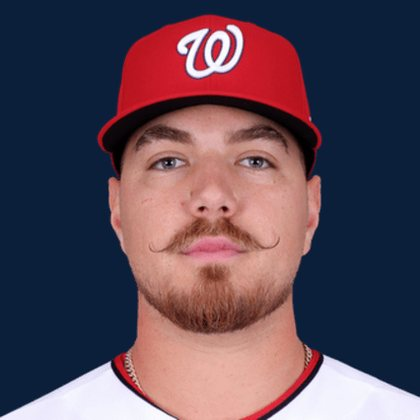

BASEBALLKEEP
Dynasty · Redraft · Diamond
Player File · SP WSH

Cade Cavalli
#24 · SP · Washington Nationals · age 27 · B/T RR · 6' 4" / 223 lbs · MLB debut 2022 · Tulsa, USA
Hitting
| Year | G | AB | R | H | 2B | HR | RBI | SB | BB | SO | AVG | OBP | SLG | OPS |
|---|---|---|---|---|---|---|---|---|---|---|---|---|---|---|
| 2025 | 10 | 0 | 0 | 0 | 0 | 0 | 0 | 0 | 0 | 0 | .000 | .000 | .000 | .000 |
Pitching
| Year | G | GS | W | L | SV | HLD | IP | K | BB | HR | ERA | WHIP | K/9 |
|---|---|---|---|---|---|---|---|---|---|---|---|---|---|
| 2026 | 27 | 27 | 11 | 5 | 0 | 0 | 142.2 | 162 | 42 | 15 | 3.22 | 1.22 | 10.22 |
| 2025 | 10 | 10 | 3 | 1 | 0 | 0 | 48.2 | 40 | 15 | 7 | 4.25 | 1.48 | 7.40 |
Plus
- SP WSH sits on The Keep at #259.
Minus
- Keep #259 is the edge of the 300. Deep-league / taxi-squad more than a foundation chip.
BaseBallKeep Take
Cade Cavalli is #259 on BaseBallKeep's overall dynasty 300, a 23-source mix anchored by RotoGraphs (Aug 14) and The Dynasty Guru points list (Aug 10). SP for WSH. Rest-of-season redraft #258. MLB since 2022. From Tulsa / USA. Bats R, throws R.
BK Value on this rank is 63. Same decaying curve as football: 12,000 at 1.01, a late first a fraction of that. If someone is asking for two firsts, run the calculator. 2026 line: 3.22 ERA, 1.22 WHIP, 162 K in 142.2 IP.
The 23-board average is 258.0 on 2 lists that actually ranked him — unranked sources are skipped, never treated as 999. High 244, low 272.
Dynasty pays the next five years. Redraft pays September. If those two ranks diverge, that is the instruction: hold the kid or cash the veteran.
Flags fly forever. We will refresh this file with The Keep. September baseball is a proving ground, not a coronation.
BK News
- Nationals ace Cade Cavalli is nibbling on the edge of Cy Young contention
- Nats' Cavalli follows near no-hitter with 11-K gem
Every Board
Spread 244–272 · 2 sources
| Source | Rank |
|---|---|
| TDG Points | 244 |
| RotoGraphs Model | 272 |
On The Keep nearby — Cole Young (#257) · Matthew Boyd (#258) · Masyn Winn (#260) · Travis Bazzana (#261)
Same position on the 300 — Paul Skenes #5 · Jacob Misiorowski #7 · Tarik Skubal #12 · Cristopher Sánchez #16 · Garrett Crochet #18 · Yoshinobu Yamamoto #24
All players · The Keep · BK News · The Lineup · Pitchers · Calculator